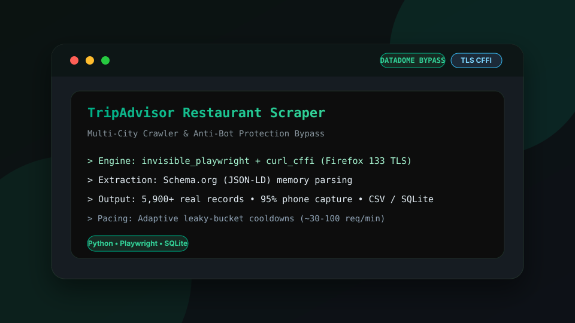

High-performance restaurant crawler with DataDome anti-bot bypass, TLS fingerprint impersonation, and multi-city support. Extracts verified commercial contacts, phones, ratings, and addresses into SQLite and CSV.
Developed to systematically catalog and extract complete restaurant registries from TripAdvisor across multiple cities (Barcelona, Valencia, Madrid, etc.) without triggering bot detection or geographic IP bans.
The project implements a hybrid architecture combining browser-based telemetry resolution (C++ patched Firefox with humanized mouse trajectories via Invisible Playwright) with native HTTP TLS impersonation (curl_cffi with Firefox 133 fingerprint), achieving high throughput and stability.